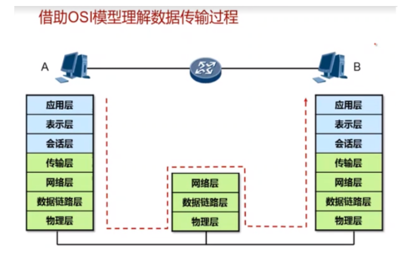
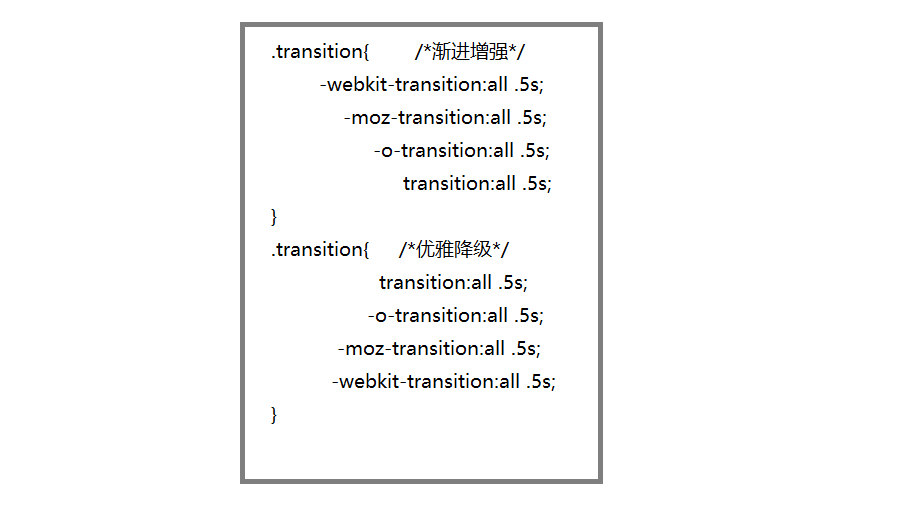

基本流程：
①.DNS解析，查询IP地址
输入IP地址先请求本地host有没有的对应的IP地址
如果没有请求DNS服务器上的
②.TCP连接
③.发送HTTP请求（POST || GET）
④.服务器处理请求并返回HTTP报文
⑤.浏览器解析渲染页面
⑥.连接结束
①应用层：其功能是实现应用进程（如用户程序、终端操作员等）之间的信息交换
常见的协议：HTTP,FTP,SMTP,POP3,TFTP
②表示层：数据的解码和编码，加密和解密，压缩和解压缩
③会话层：负责建立，管理和终止表示层之间的会话连接
④传输层：负责将来自上层应用程序的数据进行分段和重组，并将它们组合为同样的数据流形式
提供端到端数据传输服务
工作在传输层的协议：TCP协议和UDP协议
⑤网络层：定义了逻辑地址(三层地址):IP地址
分组寻址，负责将分组数据从源端传输到目的端
路由选择，维护路由表
工作在网络层的设备是路由器
解析IP地址对照路由表进行路由转发
⑥数据链路层：在不可靠物理链路上，提供可靠的数据传输服务
把帧从一跳（节点）移动到另一跳(节点)
数据链路层，以太网二层逻辑地址MAC地址：也是寻址只是在链路层上(只在link层面上)进行寻址
广域网数据链路层协议有PPP,HDLC,FrameRelay等
⑦物理层：定义线缆，接口和媒体的物理特性
★优选视频
①TCP是一种面向连接的保证可靠传输的协议。通过TCP/IP协议传输，得到的是一个顺序误差错的数据流
②使用TCP的应用
1.Web浏览器;2.电子邮件;3.文件传输程序
★注：TCP/IP协议的原理就像打电话(面向连接)，在双方通话之前 会建立连接，以保证两方的通话过程是安全的并且双方可以接受信息和数据
①UDP(用户数据报协议)是一种无连接的协议，每个数据报都是一个独立的信息，包括完整的源地址或目的地址，
它在网络上以任何可能的路径传往目的地，因此能否到达目的地，到达目的地的时间以及内容的正确性都是不能被保证的。
②使用UDP的应用
1.域名系统;2.视频流;3.IP语音(VoIP)
★注：UDP协议的原理就像对讲机(无连接),不保证信息双方能否接受，通话之前也不会建立连接(尽力而为的传输)
①为什么产生浏览器兼容，浏览器兼容问题什么是浏览器兼容:
所谓的浏览器兼容性问题，是指因为不同的浏览器对同一段代码有不同的解析，造成页面显示效果不统一的情况。
②浏览器兼容产生的原因:
因为不同浏览器使用内核及所支持的HTML等网页语言标准不同。 以及用户客户端的环境不同（如分辨率不同）造成的显示效果不能达到理想效果。 最常见的问题就是网页元素位置混乱，错位。
★兼容问题以及解决方案
★优秀参考：
①每种浏览器都有一套默认的样式表，即user agent stylesheet，网页在没有指定的样式时，按浏览器内置的样式表来渲染。这是合理的， 不同浏览器甚至同一浏览器不同版本的默认样式是不同的。但这样会有很多兼容问题。
①.最简单的办法：（不推荐使用）*{margin: 0;padding: 0;}
②.使用CSSReset可以将所有浏览器默认样式设置成一样。
③.normalize：也许有些cssreset过于简单粗暴，有点伤及无辜，normalize是另一个选择。
④.bootstrap已经引用该css来重置浏览器默认样式，比普通的cssreset要精细一些，保留浏览器有用的默认样式， 支持包括手机浏览器在内的超多浏览器，同时对HTML5元素、排版、列表、嵌入的内容、表单和表格都进行了一般化。
★.BFC（Block Formatting Context）块级格式化上下文，一个独立的块级渲染区域，该区域拥有一套渲染规则来约束块级盒子的布局，且与区域外部无关。
★BFC的约束规则
①内部的BOX会在垂直方向上一个接一个的放置；
②垂直方向上的距离由margin决定。（完整的说法是：属于同一个BFC的俩个相邻的BOX的margin会发生重叠，与方向无关。）
③每个元素的左外边距与包含块的左边界相接触（从左到右），即使浮动元素也是如此。（这说明BFC中的子元素不会超出它的包含块，而position为absolute的元素可以超出它的包含块边界）；
④BFC的区域不会与float的元素区域重叠；
⑤计算BFC的高度时，浮动子元素也参与计算；
⑥BFC就是页面上的一个隔离的独立容器，容器里面的子元素不会影响到外面的元素，反之亦然；
★BFC的应用
①防止margin重叠
②防止因发生浮动导致的高度塌陷
★如何生成BFC
①float的值不为none；
②overflow的值不为visible；
③display的值为inline-block table-cell table-caption；
④position的值为absolute或fixed；
★.IFC（Inline Formatting Context）即行内格式化上下文。常规流（也称标准流、普通流）是一个文档在被显示时最常见的布局形态。
①IFC的特性
IFC中的line box一般左右都贴紧整个IFC，但是会因为float元素而扰乱。float元素会位于IFC与与line box之间，使得line box宽度缩短。
IFC中时不可能有块级元素的，当插入块级元素时（如p中插入div）会产生两个匿名块与div分隔开，即产生两个IFC，每个IFC对外表现为块级元素，与div垂直排列。
★IFC的应用
①水平居中：当一个块要在环境中水平居中时，设置其为inline-block则会在外层产生IFC，通过text-align则可以使其水平居中。
②垂直居中：创建一个IFC，用其中一个元素撑开父元素的高度，然后设置其vertical-align:middle，其他行内元素则可以在此父元素下垂直居中。
★渐进增强（Progressive Enhancement）：一开始就针对低版本浏览器进行构建页面，完成基本的功能，然后再针对高级浏览器进行效果、交互、追加功能达到更好的体验。
★优雅降级（Graceful Degradation）：一开始就构建站点的完整功能，然后再针对低版本浏览器进行兼容。比如一开始使用 CSS3 的特性构建了一个应用，然后逐步针对各大浏览器进行 hack 使其可以在低版本浏览器上正常浏览。

①渐进增强的写法，优先考虑老版本浏览器的可用性，最后才考虑新版本的可用性。而在现在前缀CSS3和正常CSS3都可用的情况下，正常CSS3会覆盖前缀CSS3。观点：应关注于内容本身
②优雅降级的写法，优先考虑新版本浏览器的可用性，最后才考虑老版本的可用性。而在现在前缀CSS3和正常CSS3都可用的情况下，前缀CSS3会覆盖正常的CSS3。观点：应针对最高级，最完善的浏览器来开发网站
(1) 减少http请求次数：css spirit,data uri
(2) JS，CSS源码压缩
(3) 前端模板 JS+数据，减少由于HTML标签导致的带宽浪费，前端用变量保存AJAX请求结果，每次操作本地变量，不用请求，减少请求次数
(4) 用innerHTML代替DOM操作，减少DOM操作次数，优化javascript性能
(5) 用setTimeout来避免页面失去响应
(6) 用hash-table来优化查找
(7) 当需要设置的样式很多时设置className而不是直接操作style
(8) 少用全局变量
(9) 缓存DOM节点查找的结果
(10) 避免使用CSS Expression
(11) 图片预载
(12) 避免在页面的主体布局中使用table，table要等其中的内容完全下载之后才会显示出来，显示比div+css布局慢
https://www.cnblogs.com/haoyijing/p/5789348.html （https://segmentfault.com/a/1190000015960009?utm_medium=hao.caibaojian.com&utm_source=hao.caibaojian.com&share_user=1030000000178452）
Data:2018 . 9 / 21